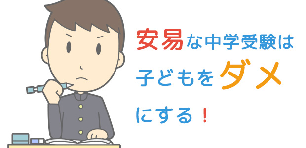

40年近い塾講師生活。
その間のおびただしい受験生指導。
かかわった中、高、大学受験生の数およそ数千人。
これらの経験から、私は若者の「受験」が必ずしも悪いものだとは思っていません。
なぜなら「受験」は、この平和な時代若者に一定の成長を促す、恐らく唯一の通過儀礼だからです。
事実私は受験を機に一気に変ぼうする生徒たちを目の当たりにしてきました。（⇒お母さんに知って欲しい男心）（⇒15歳のイニシエーション①～③）（⇒アメブロ：親の心配 子どもの迷惑 受験は自立のチャンス！）
しかし1つだけ例外があるのです。
それは中学受験です。
私は基本的に小学生が中学受験をすること、特に私立の附属中を受けることに反対します。
その理由については私の著書（「中学受験が子どもをダメにする」）でも触れましたが、本格的な受験勉強が始まる夏を前に、今回と次回の2回に渡ってお話します。
お子さんを受験させようかどうか迷っている親御さんはどうか私の考えを重要な情報の一つとして聞いていただきたいと思います。
世間が考えるほどのメリットはない
さて私が中学受験（特に私立）に反対する理由はたくさんあります。
それらのすべてを検証すると膨大な量になるので、とりあえず2つだけあげてみます。
①子どもが勉強ギライになりやすいこと
②親や世間が考えるほど人生で有利に働かない
①子どもが勉強ギライになるとは
これは単純に考えてみると分かります。
まだ遊びたい盛りの小学生に受験勉強をさせること自体にムリというか不自然さがある。
ご存知のように中学受験の準備は遅くとも小4くらいから始まります。
さらにこれまたよく知られているように、私立中学入試問題はきわめて特殊で難解なものが多く、しかもそれらをスピーディーに処理しなくてはならない。
当然中学受験専門の学習塾で小さいうちから「合格目的」のためだけの、特別な「処理能力」を特訓される。つまり詰め込まれるわけです。
正直、勉強の面白さをゆっくり味わうという観点は考慮されていないのです。
結果、受かっても受からなくても「勉強はつまらない」という印象が残ります。
彼らにとって勉強とはテストのためにイヤイヤ仕方なくやるもので、そこに学ぶ喜びや感動といった、後々まで残る知的財産を見い出すことは困難です。
勉強の面白さを伝えたい私にとってこれはすごく残念なことです。強いられた勉強の弊害でしょうね。
ところで意外に知られていないことですが、中学受験で合格してもその後中学高校で伸び悩む子は多いのです。
私も私立高校教員時代経験していますが、付属中からエスカレーターで上がって来た子たちは、ほんの一部のズバ抜けて出来る子たちと大半のヤル気のない学力不足の子にハッキリ分かれてしまいます。（このことは現在でも基本的に変わらない）
一方中学受験に不合格になって公立中に進んだ子たちも、数年に渡って後遺症に悩まされます。基本的にテストの点や順位にこだわり過ぎる傾向があり、勉強内容そのものに関心が持てない。
そして高校受験が近づくと、中学受験のトラウマが再燃するのか、パニクったり勉強から突然逃げまくったりと入試恐怖症（我々塾講師が呼ぶところの）に襲われ、能力に見合ったレベルの高校に行けなかったりする。
いずれにしても勉強そのものに興味を持てず、せっかくの高い能力を発揮せずに終わることが多いのです。
②親や世間が考えるほど私立中進学は人生で有利に働かない
多くの親は私立中、とりわけ大学付属や中高一貫校が大学進学と直結（エスカレーター）していて得であると考えているようです。
しかし、ハッキリ言ってこれは幻想です！
以下簡単に書きます。
１つめに述べたように、中学入試組の3分の2は進学後学力が伸びず、地元の公立校からでも受かる大学にしか進学していません。
たとえ大学付属であっても学力下位のこれらの生徒たちは、推薦してもらえず他大学へ行くか、系列の大学に行けるにしても希望の学部には入れない事態が起こります。
こういうことは学校関係者が明かしたがらない事実ですが、私たちの業界では常識です。
当然これらの学力がついていない中学入試組（何度も言うようだがその数は想像以上に多い）の多くは、大学に入ってからも低迷を続けがちなのです。
このようにいわゆる私立中入試というものは、多くの人が漠然と考えるよりメリットが少ないし、むしろ弊害が多いものだということを知って欲しいと思います。
次回につづきます。